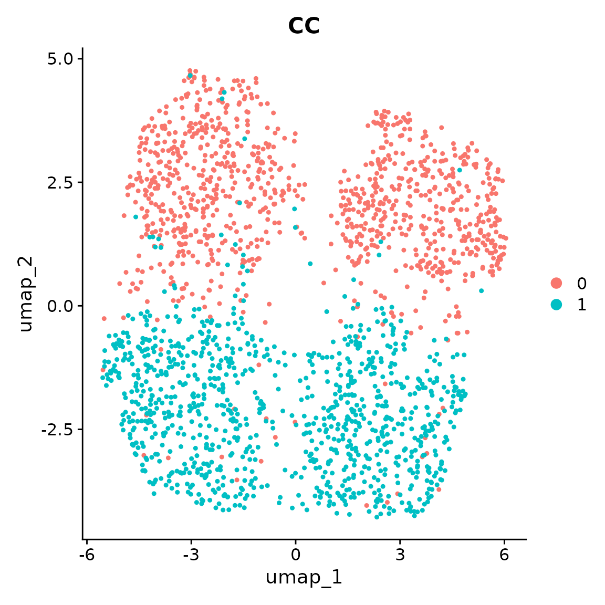
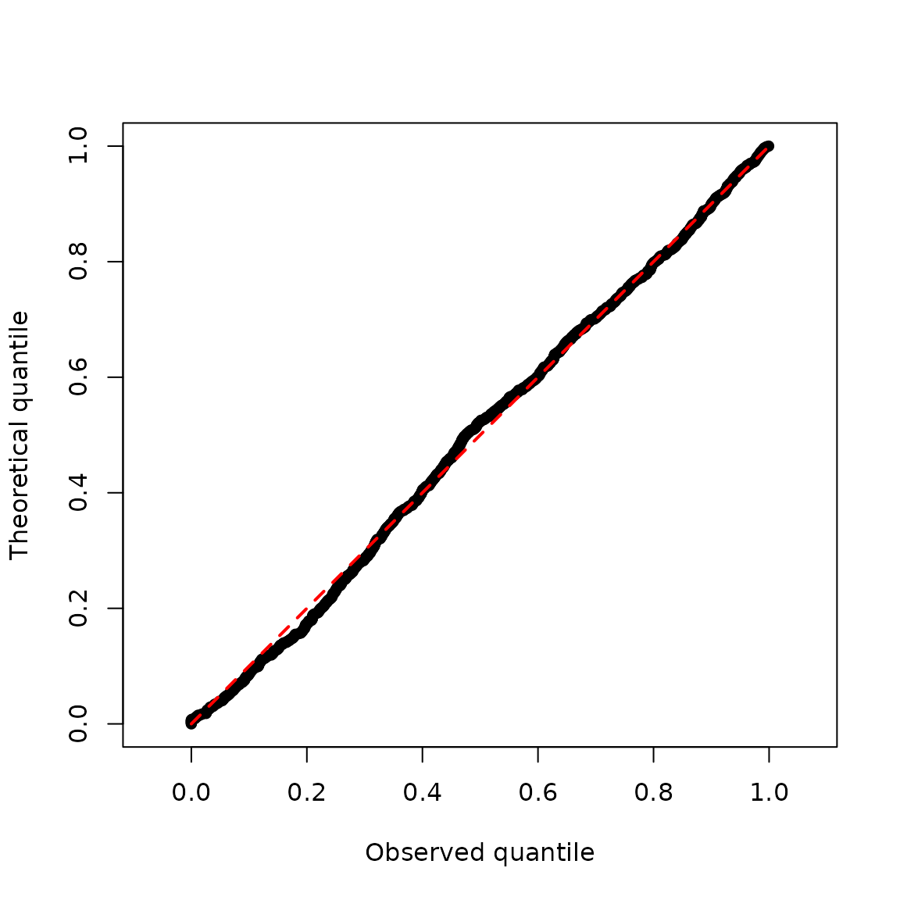

eSVD-DE Overview
Kevin Z. Lin
2024-06-15
eSVD2.RmdPurpose
The simulations here are meant to be portable, toy-examples of eSVD2, with the intent to demonstrate that an installation of eSVD2 was successful.
A successful installation of eSVD2 is required for this.
See the last section of this README of all the system/package
dependencies used when creating these simulations. Both simulations
should complete in less than 2 minutes.
Overview
Broadly speaking, eSVD-DE (the name of the method, which is
implemented in the eSVD2 package) is a pipeline of 6
different function calls. The procedure starts with primarily 3
inputs,
-
dat, eithermatrixordgCMatrix, withnrows (forncells) andpcolumns (forpgenes). We advise making sure each row/column of either matrix has non-zero variance prior to using this pipeline. -
covariates, amatrixwithnrows with the same rownames asdatwhere the columns represent the different covariates Notably, this should contain only numerical columns (i.e., all categorical variables should have already been split into numerous indicator variables), and all the columns incovariateswill (strictly speaking) be included in the eSVD matrix factorization model. -
metadata_individual, afactorvector with lengthnwhich denotes which cell originates from which individual.
Simulating data
We create a simple dataset that has no differentially expressed genes
via the eSVD2::generate_null() function.
set.seed(10)
res <- eSVD2::generate_null()
covariates <- res$covariates
metadata_individual <- res$metadata_individual
obs_mat <- res$obs_matIf you have Seurat also installed, you can run the following lines as well,
set.seed(10)
meta_data <- data.frame(covariates[, c("CC", "Sex", "Age")])
meta_data$Individual <- metadata_individual
seurat_obj <- Seurat::CreateSeuratObject(counts = Matrix::t(obs_mat), meta.data = meta_data)
Seurat::VariableFeatures(seurat_obj) <- rownames(seurat_obj)
seurat_obj <- Seurat::NormalizeData(seurat_obj)
seurat_obj <- Seurat::ScaleData(seurat_obj)
seurat_obj <- Seurat::RunPCA(seurat_obj, verbose = F)
seurat_obj <- Seurat::RunUMAP(seurat_obj, dims = 1:5)
Seurat::DimPlot(seurat_obj, reduction = "umap", group.by = "CC")
The separation between case and control cells is purely determined by the individual covariates of Age and Sex, not the case-control status.
Using eSVD-DE
-
Step 1 (Initializing the eSVD object): First, we
initialize the object of class
eSVD, which we will calleSVD_obj. This is done using theeSVD2::initialize_esvd()function. All the following operations will useeSVD_objfor all calculations through the usage of this method. This is where we pass the inputsdat,covariates, andmetadata_individual. Notice that aftereSVD2::initialize_esvd()(and later, aftereSVD2::opt_esvd()) we always calleSVD2::reparameterization_esvd_covariates()to ensure that the fit remains identifiable.
Empirically, we have found it useful to set
omitted_variables as the Log_UMI and the batch
variables. (Here, there are no batch variables.) This means that when
eSVD2 reparameterizes the variables, it does not fiddle with the
coefficient for Log_UMI. We found this beneficial since the
coefficient for specifically the covariate Log_UMI bears a
special meaning (as it impacts the normalization of the sequencing depth
most directly), and we do not wish to “mix” covariates correlated with
Log_UMI too early. (Overall, this is not a strict
recommendation, however, we have found this practice to be beneficial in
almost all instances we have used eSVD2, so we ourselves have not tried
deviating from this convention.)
This typically looks like the following.
set.seed(10)
eSVD_obj <- eSVD2::initialize_esvd(
dat = obs_mat,
covariates = covariates,
metadata_individual = metadata_individual,
case_control_variable = "CC",
bool_intercept = T,
k = 5,
lambda = 0.1,
verbose = 0
)
eSVD_obj <- eSVD2::reparameterization_esvd_covariates(
input_obj = eSVD_obj,
fit_name = "fit_Init",
omitted_variables = "Log_UMI"
)
names(eSVD_obj)
#> [1] "dat" "covariates" "param" "fit_Init" "latest_Fit"
#> [6] "case_control" "individual"-
Step 2 (Fitting the eSVD object): We now fit the
eSVD. Typically, we recommend fitting twice (i.e., calling
eSVD2::opt_esvd()twice) due to the non-convex nature of the objective function. In the first call ofeSVD2::opt_esvd(), hold all the coefficients to all the covariates aside from the case-control covariate (here, denoted as"CC"so we remove as much of the case-control covariate effect as possible. Then, in the second call ofeSVD2::opt_esvd(), we allow all the coefficients to be optimized.
Note that in the last fit of eSVD2::opt_esvd(), we do
not set any omitted_variables. This is our typical
recommendation – it is good to allow all coefficients to be
reparameterized right before the optimization is all done.
set.seed(10)
eSVD_obj <- eSVD2::opt_esvd(
input_obj = eSVD_obj,
l2pen = 0.1,
max_iter = 100,
offset_variables = setdiff(colnames(eSVD_obj$covariates), "CC"),
tol = 1e-6,
verbose = 0,
fit_name = "fit_First",
fit_previous = "fit_Init"
)
eSVD_obj <- eSVD2::reparameterization_esvd_covariates(
input_obj = eSVD_obj,
fit_name = "fit_First",
omitted_variables = "Log_UMI"
)
set.seed(10)
eSVD_obj <- eSVD2::opt_esvd(
input_obj = eSVD_obj,
l2pen = 0.1,
max_iter = 100,
offset_variables = NULL,
tol = 1e-6,
verbose = 0,
fit_name = "fit_Second",
fit_previous = "fit_First"
)
eSVD_obj <- eSVD2::reparameterization_esvd_covariates(
input_obj = eSVD_obj,
fit_name = "fit_Second",
omitted_variables = NULL
)
names(eSVD_obj)
#> [1] "dat" "covariates" "param" "fit_Init" "latest_Fit"
#> [6] "case_control" "individual" "fit_First" "fit_Second"-
Step 3 (Estimating the nuisance (i.e., over-dispersion)
parameters): After fitting the eSVD, we need to estimate the
nuisance parameters. Since we are modeling the data via a negative
binomial, this nuisance parameter is the over-dispersion parameter. This
is done via the
eSVD2::estimate_nuisance()function.
set.seed(10)
eSVD_obj <- eSVD2::estimate_nuisance(
input_obj = eSVD_obj,
bool_covariates_as_library = TRUE,
bool_library_includes_interept = TRUE,
bool_use_log = FALSE,
min_val = 1e-4,
verbose = 0
)
names(eSVD_obj)
#> [1] "dat" "covariates" "param" "fit_Init" "latest_Fit"
#> [6] "case_control" "individual" "fit_First" "fit_Second"-
Step 4 (Computing the posterior): With the
over-disperison parameter estimated, we are now ready to compute the
posterior mean and variance of each cell’s gene expression value. This
posterior distribution is to balance out the fitted eSVD denoised value
against the covariate-adjusted library size. This step ensures that even
though we pooled all the genes to denoise the single-cell expression
matrix, we do not later inflate the Type-1 error. This is done via the
eSVD2::compute_posterior()function.
set.seed(10)
eSVD_obj <- eSVD2::compute_posterior(
input_obj = eSVD_obj,
bool_adjust_covariates = FALSE,
alpha_max = 100,
bool_covariates_as_library = TRUE,
bool_stabilize_underdispersion = TRUE,
library_min = 1,
pseudocount = 0
)
names(eSVD_obj)
#> [1] "dat" "covariates" "param" "fit_Init" "latest_Fit"
#> [6] "case_control" "individual" "fit_First" "fit_Second"-
Step 5 (Computing the test statistics): Now we can
compute the test statistics using the
eSVD2::compute_test_statistic()function.
set.seed(10)
eSVD_obj <- eSVD2::compute_test_statistic(input_obj = eSVD_obj, verbose = 0)
names(eSVD_obj)
#> [1] "dat" "covariates" "param" "fit_Init" "latest_Fit"
#> [6] "case_control" "individual" "fit_First" "fit_Second" "teststat_vec"
#> [11] "case_mean" "control_mean"-
Step 6 (Computing the p-values): Lastly, we can
compute the p-values via the
eSVD2::compute_pvalue()function.
set.seed(10)
eSVD_obj <- eSVD2::compute_pvalue(input_obj = eSVD_obj)
names(eSVD_obj)
#> [1] "dat" "covariates" "param" "fit_Init" "latest_Fit"
#> [6] "case_control" "individual" "fit_First" "fit_Second" "teststat_vec"
#> [11] "case_mean" "control_mean" "pvalue_list"To visualize the p-values, we can plot the theoretical quantiles against the observed quantiles. We see that despite the UMAP above showing strong differences between the case and control cells, the p-values are all uniformly distributed. This shows that we do not inflate the Type-1 error.
pvalue_vec <- 10 ^ (-eSVD_obj$pvalue_list$log10pvalue)
graphics::plot(
x = sort(pvalue_vec),
y = seq(0, 1, length.out = length(pvalue_vec)),
asp = TRUE,
pch = 16,
xlab = "Observed quantile",
ylab = "Theoretical quantile"
)
graphics::lines(
x = c(0, 1),
y = c(0, 1),
col = "red",
lty = 2,
lwd = 2
)
Setup
The following shows the suggested package versions that the developer (GitHub username: linnykos) used when developing the eSVD2 package.
devtools::session_info()
#> ─ Session info ───────────────────────────────────────────────────────────────
#> setting value
#> version R version 4.5.2 (2025-10-31)
#> os Ubuntu 24.04.3 LTS
#> system x86_64, linux-gnu
#> ui X11
#> language en
#> collate C.UTF-8
#> ctype C.UTF-8
#> tz UTC
#> date 2025-12-26
#> pandoc 3.1.11 @ /opt/hostedtoolcache/pandoc/3.1.11/x64/ (via rmarkdown)
#> quarto NA
#>
#> ─ Packages ───────────────────────────────────────────────────────────────────
#> package * version date (UTC) lib source
#> abind 1.4-8 2024-09-12 [1] RSPM
#> bslib 0.9.0 2025-01-30 [1] RSPM
#> cachem 1.1.0 2024-05-16 [1] RSPM
#> cli 3.6.5 2025-04-23 [1] RSPM
#> cluster 2.1.8.1 2025-03-12 [3] CRAN (R 4.5.2)
#> codetools 0.2-20 2024-03-31 [3] CRAN (R 4.5.2)
#> cowplot 1.2.0 2025-07-07 [1] RSPM
#> data.table 1.18.0 2025-12-24 [1] RSPM
#> deldir 2.0-4 2024-02-28 [1] RSPM
#> desc 1.4.3 2023-12-10 [1] RSPM
#> devtools 2.4.6 2025-10-03 [1] RSPM
#> digest 0.6.39 2025-11-19 [1] RSPM
#> dotCall64 1.2 2024-10-04 [1] RSPM
#> dplyr 1.1.4 2023-11-17 [1] RSPM
#> ellipsis 0.3.2 2021-04-29 [1] RSPM
#> eSVD2 * 1.0.1.05 2025-12-26 [1] local
#> evaluate 1.0.5 2025-08-27 [1] RSPM
#> farver 2.1.2 2024-05-13 [1] RSPM
#> fastDummies 1.7.5 2025-01-20 [1] RSPM
#> fastmap 1.2.0 2024-05-15 [1] RSPM
#> fitdistrplus 1.2-4 2025-07-03 [1] RSPM
#> foreach 1.5.2 2022-02-02 [1] RSPM
#> fs 1.6.6 2025-04-12 [1] RSPM
#> future 1.68.0 2025-11-17 [1] RSPM
#> future.apply 1.20.1 2025-12-09 [1] RSPM
#> generics 0.1.4 2025-05-09 [1] RSPM
#> ggplot2 4.0.1 2025-11-14 [1] RSPM
#> ggrepel 0.9.6 2024-09-07 [1] RSPM
#> ggridges 0.5.7 2025-08-27 [1] RSPM
#> glmnet 4.1-10 2025-07-17 [1] RSPM
#> globals 0.18.0 2025-05-08 [1] RSPM
#> glue 1.8.0 2024-09-30 [1] RSPM
#> gmp 0.7-5 2024-08-23 [1] RSPM
#> goftest 1.2-3 2021-10-07 [1] RSPM
#> gridExtra 2.3 2017-09-09 [1] RSPM
#> gtable 0.3.6 2024-10-25 [1] RSPM
#> htmltools 0.5.9 2025-12-04 [1] RSPM
#> htmlwidgets 1.6.4 2023-12-06 [1] RSPM
#> httpuv 1.6.16 2025-04-16 [1] RSPM
#> httr 1.4.7 2023-08-15 [1] RSPM
#> ica 1.0-3 2022-07-08 [1] RSPM
#> igraph 2.2.1 2025-10-27 [1] RSPM
#> irlba 2.3.5.1 2022-10-03 [1] RSPM
#> iterators 1.0.14 2022-02-05 [1] RSPM
#> jquerylib 0.1.4 2021-04-26 [1] RSPM
#> jsonlite 2.0.0 2025-03-27 [1] RSPM
#> KernSmooth 2.23-26 2025-01-01 [3] CRAN (R 4.5.2)
#> knitr 1.51 2025-12-20 [1] RSPM
#> labeling 0.4.3 2023-08-29 [1] RSPM
#> later 1.4.4 2025-08-27 [1] RSPM
#> lattice 0.22-7 2025-04-02 [3] CRAN (R 4.5.2)
#> lazyeval 0.2.2 2019-03-15 [1] RSPM
#> lifecycle 1.0.4 2023-11-07 [1] RSPM
#> listenv 0.10.0 2025-11-02 [1] RSPM
#> lmtest 0.9-40 2022-03-21 [1] RSPM
#> locfdr 1.1-8 2015-07-15 [1] RSPM
#> magrittr 2.0.4 2025-09-12 [1] RSPM
#> MASS 7.3-65 2025-02-28 [3] CRAN (R 4.5.2)
#> Matrix 1.7-4 2025-08-28 [3] CRAN (R 4.5.2)
#> matrixStats 1.5.0 2025-01-07 [1] RSPM
#> memoise 2.0.1 2021-11-26 [1] RSPM
#> mime 0.13 2025-03-17 [1] RSPM
#> miniUI 0.1.2 2025-04-17 [1] RSPM
#> nlme 3.1-168 2025-03-31 [3] CRAN (R 4.5.2)
#> otel 0.2.0 2025-08-29 [1] RSPM
#> parallelly 1.46.0 2025-12-12 [1] RSPM
#> patchwork 1.3.2 2025-08-25 [1] RSPM
#> pbapply 1.7-4 2025-07-20 [1] RSPM
#> pillar 1.11.1 2025-09-17 [1] RSPM
#> pkgbuild 1.4.8 2025-05-26 [1] RSPM
#> pkgconfig 2.0.3 2019-09-22 [1] RSPM
#> pkgdown 2.2.0 2025-11-06 [1] RSPM
#> pkgload 1.4.1 2025-09-23 [1] RSPM
#> plotly 4.11.0 2025-06-19 [1] RSPM
#> plyr 1.8.9 2023-10-02 [1] RSPM
#> png 0.1-8 2022-11-29 [1] RSPM
#> polyclip 1.10-7 2024-07-23 [1] RSPM
#> progressr 0.18.0 2025-11-06 [1] RSPM
#> promises 1.5.0 2025-11-01 [1] RSPM
#> purrr 1.2.0 2025-11-04 [1] RSPM
#> R6 2.6.1 2025-02-15 [1] RSPM
#> ragg 1.5.0 2025-09-02 [1] RSPM
#> RANN 2.6.2 2024-08-25 [1] RSPM
#> RColorBrewer 1.1-3 2022-04-03 [1] RSPM
#> Rcpp * 1.1.0 2025-07-02 [1] RSPM
#> RcppAnnoy 0.0.22 2024-01-23 [1] RSPM
#> RcppHNSW 0.6.0 2024-02-04 [1] RSPM
#> remotes 2.5.0 2024-03-17 [1] RSPM
#> reshape2 1.4.5 2025-11-12 [1] RSPM
#> reticulate 1.44.1 2025-11-14 [1] RSPM
#> rlang 1.1.6 2025-04-11 [1] RSPM
#> rmarkdown 2.30 2025-09-28 [1] RSPM
#> Rmpfr 1.1-2 2025-10-27 [1] RSPM
#> ROCR 1.0-11 2020-05-02 [1] RSPM
#> RSpectra 0.16-2 2024-07-18 [1] RSPM
#> Rtsne 0.17 2023-12-07 [1] RSPM
#> S7 0.2.1 2025-11-14 [1] RSPM
#> sass 0.4.10 2025-04-11 [1] RSPM
#> scales 1.4.0 2025-04-24 [1] RSPM
#> scattermore 1.2 2023-06-12 [1] RSPM
#> sctransform 0.4.2 2025-04-30 [1] RSPM
#> sessioninfo 1.2.3 2025-02-05 [1] RSPM
#> Seurat * 5.4.0 2025-12-14 [1] RSPM
#> SeuratObject * 5.3.0 2025-12-12 [1] RSPM
#> shape 1.4.6.1 2024-02-23 [1] RSPM
#> shiny 1.12.1 2025-12-09 [1] RSPM
#> sp * 2.2-0 2025-02-01 [1] RSPM
#> spam 2.11-1 2025-01-20 [1] RSPM
#> spatstat.data 3.1-9 2025-10-18 [1] RSPM
#> spatstat.explore 3.6-0 2025-11-22 [1] RSPM
#> spatstat.geom 3.6-1 2025-11-20 [1] RSPM
#> spatstat.random 3.4-3 2025-11-21 [1] RSPM
#> spatstat.sparse 3.1-0 2024-06-21 [1] RSPM
#> spatstat.univar 3.1-5 2025-11-17 [1] RSPM
#> spatstat.utils 3.2-0 2025-09-20 [1] RSPM
#> stringi 1.8.7 2025-03-27 [1] RSPM
#> stringr 1.6.0 2025-11-04 [1] RSPM
#> survival 3.8-3 2024-12-17 [3] CRAN (R 4.5.2)
#> systemfonts 1.3.1 2025-10-01 [1] RSPM
#> tensor 1.5.1 2025-06-17 [1] RSPM
#> textshaping 1.0.4 2025-10-10 [1] RSPM
#> tibble 3.3.0 2025-06-08 [1] RSPM
#> tidyr 1.3.2 2025-12-19 [1] RSPM
#> tidyselect 1.2.1 2024-03-11 [1] RSPM
#> usethis 3.2.1 2025-09-06 [1] RSPM
#> uwot 0.2.4 2025-11-10 [1] RSPM
#> vctrs 0.6.5 2023-12-01 [1] RSPM
#> viridisLite 0.4.2 2023-05-02 [1] RSPM
#> withr 3.0.2 2024-10-28 [1] RSPM
#> xfun 0.55 2025-12-16 [1] RSPM
#> xtable 1.8-4 2019-04-21 [1] RSPM
#> yaml 2.3.12 2025-12-10 [1] RSPM
#> zoo 1.8-15 2025-12-15 [1] RSPM
#>
#> [1] /home/runner/work/_temp/Library
#> [2] /opt/R/4.5.2/lib/R/site-library
#> [3] /opt/R/4.5.2/lib/R/library
#> * ── Packages attached to the search path.
#>
#> ──────────────────────────────────────────────────────────────────────────────